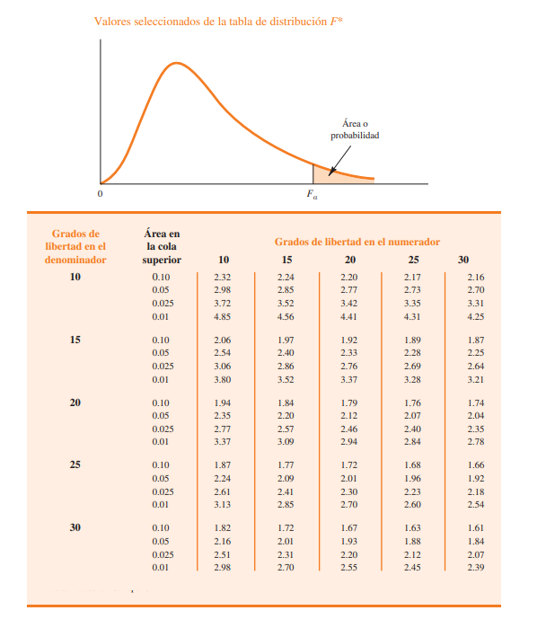

Youssef||Diego||Brayan||Nicolas||Jose.
Inferencias acerca de dos varianzas poblacionales
Para comparar las varianzas de dos poblaciones se emplean datos obtenidos de dos muestras aleatorias independientes: una de la población 1 y otra de la población 2. Para hacer las inferencias acerca de las dos varianzas poblacionales σ2 1 y σ2 2 se usan las dos varianzas muestrales s1 y s2. Cuando las varianzas de dos poblaciones normales son iguales (σ1 = σ2), la distribución de muestreo de la proporción entre las dos varianzas muestrales s1/s2 es la siguiente:
ESTADISTICO DE PRUEBA PARA PRUEBAS DE HIPOTESIS ACERCA DE VARIANZAS POBLACIONALES CON σ1=σ2.
Como el estadístico de prueba F se construye con la varianza muestral más grande s1 en el numerador, el valor de este estadístico se encontrará siempre en la cola superior de la distribución F. Por tanto, las tablas de la distribución , únicamente necesitan proporcionar áreas o probabilidades en la cola superior.
